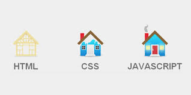
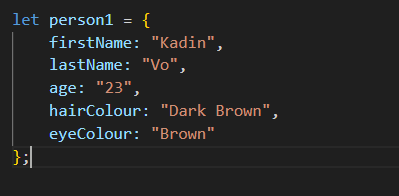

What is Javascript?
Javascript is a programming language that gived functionality to HTML & CSS. It is a dynamic program that can update content, animate images, calculate, manipulate data, and allows the website to be interactive. An analogy that can be used for Javascript and its relationship to HTML & CSS is the structure of a house. HTML acts as the foundation and overall structure of the house & CSS acts as the fancy paint, colours and every visbile feature. Javascript acts on the inside of the house, wether it be electricity, plumbing, functional features such as outlets & faucets. As you can see by the picture below, Javascript completely enables the features of the house. Doors knobs, lights, a fireplace, these all are things that Javascript would make work in the HTML & CSS relationship. 
{kind=link}
Control flow & Loops
Control flow is the sequence of steps/decisions that determines the overall flow of a process. To demonstrate control flow, I will use an example of someone going out to order food that is not close to home.
- Check what food you want to eat
- If the place you want to eat at is open, go to the next step. If not, search for an alternative.
- Get in Car, if there is enough gas, go to the next step. Otherwise get gas.
- Drive to destination.
- Once at destination, park the car in restaurant parking lot. If no spots are available park in an alternative street.
- Enter restaurant
- Order food
- Once food has arrived, enjoy the meal!
What is the DOM?
The DOM stands for Document Object Model, essentially it is a tree structure due to each node, there is an object that branches off to another object, hence the tree structure. The DOM enables a user to interact and access with objects within the HTML document, with Javascript, you can manipulate HTML & CSS elements on a page. Below is an example of how the DOM structure features tree-like aspects. Everything at the top of my page section of "Javascript Fundamentals" to my "EQ & IQ" link would originate from the same branch. Whereas everything from "What is Javascript?" to now would originate from a different branch.
An example of someone manipulating the DOM is when you do online shopping. If you were to add something to your cart, that is Javascript manipulating the data and your webbrowser to store that you have +1 item and will register it within their system. This is unique to your own cart and enables you to buy what you want as it is automatically updated.

The difference between accessing data from arrays and objects
Arrays:
An array is stored in brackets [ ]. It looks like a box and it is best to imagine it represents a box. Anything inside an array is in the same box so a primary example is imagine if you are moving. You have a box for toys, electronics, decorations, fragile etc.. Each of these boxes store their own items so you can imagine each box is a unique array. The first item that gets put in the box can be considered item 0, and the next one 1, then 2, then 3 and so on. Computers are just funny and begin at 0 which is why the first item is considered 0 and goes up by 1 increment from there. To access each item we would call the posistion of each item, so if we wanted the very first item in the box we would enter array[0], or if we wanted the second one it would be array[1].
Objects:
An object is represented by { } brackets. Objects essentially has properties that are important to the object such as first name, last name, age and hair color. If you wanted to access the data of the object from below, you would do person1.age which would contain the string of "23", if you wanted to change it to a number and perhaps the information was wrong, the user could input person1.age = 24; which would access the person1's age and change it to 24. 
{kind=link}
What are functions and why are they helpful?
Functions contain aspects which enable something to happen. An example would be like a recipe. Inside the function, you have your ingredients and you have to follow the recipe to make a cake. However, you cannot start from just anywhere when making a cake, you have to start at step 1. That is what functions do. They start from the top and make their way down in order to make something happen. This is useful as if you made 1 cake you would have to make it again. However, with Javascript because you already have made the function to make a cake, all you would have to do is call it one more time and it would already have the cake made for you!